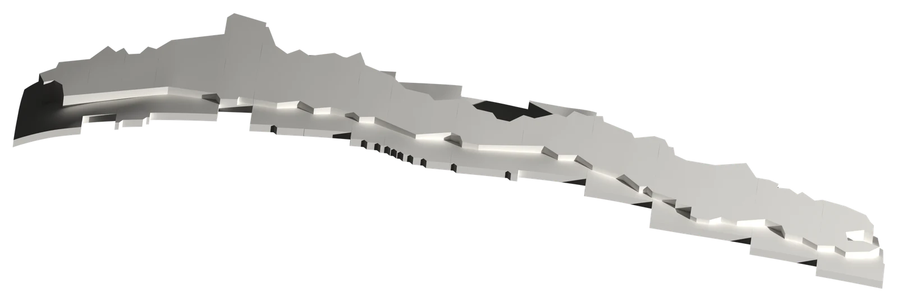
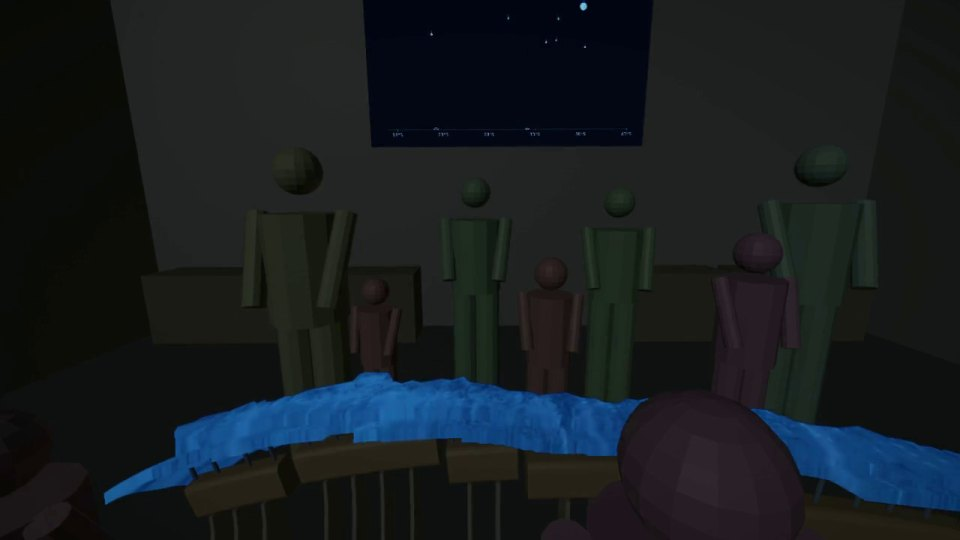

Sección 13 del relator (29–30°S), recuerdo de la presentación del 16 de mayo de 2026: desde el hipocentro, marcado con una clave de sol, se propagan las ondas. Al avanzar, la pieza gira y encaja en el relator.
Exposición · sismología, música y mapping
El sonido del movimiento.

Un viaje espacio-temporal por una de las zonas más sísmicas del mundo: la subducción de la placa de Nazca bajo la placa Sudamericana. Del relato de Tren Tren y Caicai Vilu a la pandemia del coronavirus.
La obra
Un país convertido en instrumento.
El objetivo de la exposición es mostrar el aporte cultural de la sismología: desde el relato de los pueblos originarios sobre la transformación del territorio, posterior a la creación del mundo, y la interacción de las divinidades con el hombre (la cosmovisión mapuche) hasta la ciencia actual, como herramienta para preservar y evidenciar hitos históricos. Mezcla técnicas visuales, como mapping e impresión 3D, con distintas técnicas y estilos musicales.

La sala
Cuatro paneles. Un relator.
La exposición se desarrolla en una única sala. Dos pares de paneles rodean al instrumento relator: los de los muros oriente y poniente muestran una animación de estilo caricatura, y los de los muros norte y sur, la transcripción del relato. El relator es una impresión 3D de Chile (17°S–43°S), apoyada sobre la subducción de la placa de Nazca bajo la Sudamericana, donde se produce la mayor cantidad de terremotos del país. Está formado por 26 secciones de un grado de latitud cada una. Sobre él se proyecta un mapping que cuenta la misma historia que los paneles.
Los momentos avanzan en orden cronológico según los avances de la sismología, desde la creencia hasta una concepción científica de los terremotos, apoyados por extractos de artículos científicos. La música recorre el tiempo en sentido inverso: parte con la inteligencia artificial y termina en sonidos naturales.
El público es parte de la obra. En el momento 0 arma el relator con sus propias manos, sección por sección, y después lo rodea por ambos costados para escuchar.
Palabras del autor
Un nuevo instrumento
«La exposición está inspirada en la creación de un nuevo instrumento musical, capaz de interpretar el ciclo sísmico.»
El sonido del movimiento es una invitación a un viaje espacio-temporal por una de las zonas más sísmicas del mundo: la subducción de la placa de Nazca bajo la placa Sudamericana. El recorrido comienza con el relato de Tren Tren y Caicai Vilu y se extiende hasta la pandemia del coronavirus, mostrando la interrelación entre la cultura y la sismología.
La exposición está inspirada en la creación de un nuevo instrumento musical, capaz de interpretar el ciclo sísmico, y en el trabajo en sismología del profesor Sergio Ruiz.
Esta experiencia me ha permitido profundizar tanto en ciencia y tecnología como en diferentes expresiones artísticas. En este proceso, destaco el legado y el impacto de los profesores Rodolfo Saragoni, Raúl Madariaga y José Vicente Asuar, así como de los músicos y poetas Violeta Parra, Nicanor Parra y Jorge Peña Hen.
Por último, quisiera agradecer a todos quienes han dedicado tiempo en este proyecto y lo han enriquecido.
— Bastián I. Garrido Kogan · texto de presentación de la exposición
La sismología como patrimonio
El movimiento también nos define.
Solemos pensar el patrimonio como algo inmóvil: palacios, monumentos de piedra, tradiciones folclóricas. Pero el patrimonio también es aquello que define nuestras prácticas sociales, transmite valores de una generación a otra y se resignifica con el tiempo. Habitar Chile implica convivir con el latido de la Tierra.
La memoria grabada en un sismograma, los relatos orales de quienes sobrevivieron a grandes catástrofes y la evolución del conocimiento científico para protegernos forman un legado intangible y natural. Es una herencia que resignificamos con cada nuevo sismo, transformando el miedo en resiliencia, arte y comunidad.
«Quiero mostrarles cómo el movimiento de la Tierra nos define como personas y a nuestro entorno, desde la creencia hasta el conocimiento científico, y cómo nosotros también podemos afectarlo y verlo a través de la memoria de un sismograma.»— Bastián I. Garrido Kogan
Seis momentos · de la creencia a la ciencia
Quinientos años de terremotos, en nueve minutos.
Recorrido
Míralo desde tres lugares.
La maqueta audiovisual simula la sala y las proyecciones de cada momento. Elija un punto de vista. En esta edición web se omiten las obras musicales y literarias de terceros; ver derechos y créditos.
Visita 360° · realidad virtual
Párese en la sala.
La exposición completa desde la posición de un adulto de 1,65 m, en la segunda fila del costado poniente. Durante M0 la vista acompaña su recorrido mientras arma el relator; desde M1 queda fija y usted elige hacia dónde mirar.
Arrastre la imagen o mueva el teléfono para girar la vista. En un visor de realidad virtual, como Meta Quest, ábralo en la app YouTube VR. Edición web: sin obras musicales ni literarias de terceros. Abrir en YouTube
Progresión del trabajo
Del papel a la sala.
Material de educación patrimonial · kit de impresión 3D · cinco arcos, 26 secciones
Construye la obra en tu colegio.
En vez de trasladar la obra, se puede imprimir donde se va a mostrar. El relator se arma por arcos: cada arco lleva una palabra del título, El · Sonido · Del · Movimiento · 2026, se apoya en sus columnas y sostiene, con tubos, sus secciones de un grado de latitud: arriba el relieve de Chile continental, abajo la placa de Nazca que subducta bajo la Sudamericana.
Imprimir y armar el relator en la sala de clases repite el momento 0 de la exposición, La creación: cada grupo imprime un arco y cada estudiante ubica su pieza, de norte a sur, hasta completar el país.
Compare las escalas.
Cinco arcos, cuatro archivos cada uno.
Piezas separadas: columnas, arco, tubos y secciones.
Cómo imprimir
- Cada arco tiene cuatro archivos: columnas, arco, tubos y secciones. Las piezas ya vienen orientadas y separadas sobre la cama; en el laminador se pueden reordenar o repartir en varias impresiones.
- PLA, capa de 0,2 mm, 3 perímetros, 4 capas superiores e inferiores y 15 % de relleno. Sin soportes; los tubos van de pie con borde (brim).
- Para otra escala, escale todas las piezas por igual: 200 % para 1:2 y 400 % para 1:1.
- Al retirar cada sección, escriba su número en la cara inferior (la cara de corte norte).
Cómo armarla
- Columnas de pie, con la base ancha al suelo. El espigón superior entra en la ranura del fondo del arco.
- Arco con la palabra legible desde el poniente; los agujeros de los tubos quedan arriba.
- Tubos: un extremo en el arco, el otro en el agujero bajo cada sección. Luego las secciones de norte a sur, de la 1 a la 26, con las caras de corte en contacto y la fosa hacia el poniente.
- Los cinco arcos se alinean de norte a sur y los videos del recorrido cuentan la historia sobre el relator armado.
Encajes con 0,2 mm de holgura (espigón de las columnas 5,5 mm dentro del arco; tubos de Ø 5 mm, 7,5 mm dentro del arco y de la sección). Filamento y tiempo son referenciales: PLA (1,24 g/cm³) con 3 perímetros y 15 % de relleno, ritmo de 50 g cada 90 min y $13.000 por kilo. Las dimensiones indicadas son las del conjunto de piezas tal como viene en cada archivo.
Mapping · lo que se proyecta sobre el relator en cada momento
Láminas de proyección.
Las láminas de dibujo muestran, en planta y a escala, la imagen que el proyector cenital dibuja sobre el relator en cada momento: las portadas, el relieve de Chile ancestral, los cuatro terremotos coloniales, el computador de Asuar, los registros de 1973 y el relieve neón de la pandemia. Sirven para verificar el mapping antes del montaje y para explicar la obra en clases.
- 1Planta de la sala con el relator rotado 6,86° · 1:30
- 2–7Portadas T0–T5 proyectadas sobre el relator, corregidas por el relieve · 1:30
- 8M1 · Chile ancestral: relieve y secuencia de diapositivas 4–7 sobre la cara superior · 1:16
- 9M2 · Chile colonial: cuatro terremotos, epicentros y rótulos alineados con el relator · 1:16
- 10M3 · Punto de inflexión: relieve, computador de Asuar revelado por secciones y Chile en azul · 1:16
- 11M4 · Memorias I: registros del 11 de septiembre de 1973, cuatro instantes · 1:16
- 12M5 · Memorias II: relieve neón ajustado a la cara superior · 1:10
Ficha técnica de montaje
Lo que necesita la sala.
Cinco proyectores, un computador, cuatro parlantes y luz controlada. Las medidas provienen del modelo de montaje V5; las especificaciones de equipos son recomendaciones para cotizar y validar en el recinto.
| Elemento | Cant. | Especificación | Ubicación y uso |
|---|---|---|---|
| Proyector cenital del relatormodelo V5 | 1 | Láser, resolución nativa 1920 × 1080 (ideal WUXGA 1920 × 1200), ≥ 4 000 lm ANSI, relación de tiro ≈ 0,83 (zoom 0,75–0,90 o lente intercambiable), apto para instalación vertical a 90° y con desplazamiento de lente. | Colgado del cielo sobre el centro del relator, lente a 3,70 m; distancia al tope 2,90 m; imagen ≈ 3,49 × 1,96 m sobre la cara superior. Proyecta el mapping de M0–M5. |
| Proyectores de panel, tiro cortomodelo V5 | 4 | Láser, 1920 × 1080, ≥ 3 000 lm ANSI, relación de tiro 0,50, formato 16:9. | Colgados del cielo, lente a 3,75 m. Caricatura E y O: a 1,50 m del muro. Transcripción N y S: a 1,00 m del muro. |
| Pantallas de caricaturamodelo V5 | 2 | Superficie blanca mate, ganancia ≈ 1,0, 16:9, 3,00 × 1,69 m (marco o tela tensada; alternativa: muro con pintura de proyección). | Muros oriente y poniente, borde inferior a 2,10 m. |
| Pantallas de transcripciónmodelo V5 | 2 | Igual a las anteriores, 2,00 × 1,13 m. | Muros norte y sur, borde inferior a 2,10 m. |
| Soportes de cielorecomendado | 5 | Soporte universal regulable para proyector, con cable de seguridad; el cenital, con placa para montaje vertical o estructura (truss) sobre el relator. | Uno por proyector. |
| Elemento | Cant. | Especificación | Ubicación y uso |
|---|---|---|---|
| Computador de reproducciónrecomendado | 1 | GPU dedicada con ≥ 3 salidas de video independientes 1080p60, 16 GB RAM, SSD ≥ 500 GB, sistema con arranque automático. Programa de reproducción con línea de tiempo y cues, video y audio sincronizados (p. ej. QLab, Millumin, Resolume o TouchDesigner). | Mesa de control fuera de la zona de público. Salidas: 1 cenital, 2 caricatura, 3 transcripción. |
| Divisores de video HDMI 1 × 2recomendado | 2 | 1080p60 (o 4K), compatibles con HDCP. | Duplican la caricatura (E y O) y la transcripción (N y S). Alternativa: GPU con 5 salidas. |
| Computador de respaldorecomendado | 1 | Notebook con el mismo programa y contenido cargado. | Reemplazo en caso de falla. |
| Control del M0recomendado | 1 | Teclado inalámbrico, controlador MIDI o botonera. | El operador hace aparecer el título sección por sección y ajusta la duración del sonido de la impresora al ritmo del armado. |
| Elemento | Cant. | Especificación | Ubicación y uso |
|---|---|---|---|
| Interfaz de audio USB («caja de sonido»)recomendado | 1 | ≥ 4 salidas balanceadas (TRS), 48 kHz, control de volumen por salida. | Junto al computador de reproducción. |
| Parlantes activosrecomendado | 4 | Monitor activo de 6,5–8", ≥ 50 W RMS, respuesta ≈ 50 Hz–20 kHz. | En las cuatro esquinas, a ≈ 2,2 m de altura, orientados al centro del relator. Los pares N y S reproducen la misma mezcla estéreo, para que el nivel sea parejo en las secciones 1, 13 y 26 por ambos costados. |
| Subwoofer activo (opcional)recomendado | 1 | 8–10", con filtro de cruce. | Bajo el relator o junto a un muro extremo. Refuerza los graves de la impresora (M0) y de la música. |
| Nivel de escucharecomendado | — | 75–85 dB(A) en la zona de público. | Verificar con sonómetro en las secciones 1, 13 y 26, por ambos costados. |
| Elemento | Cant. | Especificación | Ubicación y uso |
|---|---|---|---|
| Oscurecimiento de la salarecomendado | — | Ventanas y puertas cubiertas (blackout); luz ambiente ≤ 5 lux durante las proyecciones. | Toda la sala. |
| Focos LED regulables (spot)recomendado | 2 | 20–30 W, 2 700–3 000 K, regulables por DMX (interfaz USB-DMX desde el computador) o con dimmer manual. | Sobre las repisas NE y SE y el relator, solo durante el M0; se apagan al comenzar el M1. |
| Luz de circulaciónrecomendado | 1 set | Tira LED regulable a nivel de zócalo o balizas de piso, ≤ 10 lux. | Bordes de la sala y recorrido de entrada y salida. |
| Iluminación de emergencia y señaléticarecomendado | Según norma | Según normativa vigente del recinto. | Salidas y vías de evacuación. |
| Luz de trabajorecomendado | 1 set | Focos LED portátiles. | Montaje y desmontaje. |
| Elemento | Cant. | Especificación | Ubicación y uso |
|---|---|---|---|
| Video HDMIrecomendado | ≈ 7 tramos | HDMI 2.0; tramos de más de 10 m con cable óptico activo (AOC) o extensores HDBaseT. | Computador → divisores → 5 proyectores, tendido por el cielo (sala 8,3 × 6,0 m, proyectores a 3,75 m). |
| Audio balanceadorecomendado | 5 | TRS–XLR, 10–15 m. | Interfaz → 4 parlantes y subwoofer, por muros o cielo. |
| USBrecomendado | 2 | ≤ 3 m. | Interfaz de audio e interfaz USB-DMX. |
| Red (opcional)recomendado | 1 | Cat6. | Control remoto del computador o sincronía con el respaldo. |
| Energíarecomendado | 2 circuitos | 16 A / 220 V; consumo estimado ≈ 3 kW (5 proyectores ≈ 1,8 kW, audio ≈ 0,6 kW, computador ≈ 0,4 kW, luces ≈ 0,1 kW); zapatillas con protección y UPS ≥ 1 kVA para computador e interfaz. | Tablero del recinto. |
| Fijación y protecciónrecomendado | — | Canaletas y cubrecables, bridas, cinta gaffer, cables de seguridad. | Sin cables sueltos en la zona de circulación alrededor del relator. |
| Elemento | Cant. | Especificación | Ubicación y uso |
|---|---|---|---|
| Relatormodelo V5 | 26 secciones | Impresión 3D de Chile de 17°S a 43°S sobre la subducción; largo ≈ 3,29 m; tope a 0,80 m (OGUC 4.1.7 N° 5, apto para niños y usuarios de silla de ruedas). | Centro de la sala, eje N–S; en V5b, girado 6,86° para que los cortes queden paralelos a los muros N y S. |
| Soporte del relatormodelo V5 | 5 arcos | Arcos con las palabras del título, columnas y tubos (ver «Construye la obra»). | Bajo el relator; ya instalados antes del M0. |
| Repisas del M0modelo V5 | 4 | ≈ 7 secciones cada una. | 2 junto al muro NE y 2 junto al SE. |
Medidas del modelo
Las marcadas «modelo V5» salen del montaje digital: alturas de lente, distancias a muros, tamaños de imagen y relaciones de tiro, verificadas con trazado de rayos (sin sombras del público sobre paneles ni relator). La sala de 8,3 × 6,0 × 4,0 m es supuesta: con otra planta se recalculan las posiciones.
Antes de adquirir
Validar en el recinto el alto libre, los puntos de anclaje en el cielo, la capacidad eléctrica y el oscurecimiento. Comprobar con el proveedor que el proyector cenital admite montaje vertical y que los de panel cubren la imagen con tiro 0,50.
Contenido
Tres señales de video: mapping del relator, caricatura (E y O) y transcripción (N y S), más el audio en estéreo. Las proyecciones sobre el relator vienen corregidas por el relieve; en el recinto solo se ajusta la posición, sin corrección de trapecio.
Para evaluadores y programadores
La obra en dos minutos.
El sonido del movimiento es una exposición inmersiva que presenta la sismología como patrimonio cultural de Chile. En una sola sala, el público arma con sus manos el relator: un instrumento de 26 secciones impresas en 3D que reproduce Chile de 17°S a 43°S sobre la subducción de la placa de Nazca. Sobre él se proyecta un mapping y, en cuatro paneles, una animación y la transcripción del relato. En nueve minutos, seis momentos recorren quinientos años de terremotos: del relato mapuche de Tren Tren Vilu y Caicai Vilu a las crónicas coloniales, el nacimiento de la sismología moderna con Raúl Madariaga y José Vicente Asuar, los registros del 11 de septiembre de 1973 y el silencio sísmico de la pandemia. La música recorre el tiempo al revés, de la inteligencia artificial a los sonidos naturales. La obra cruza ciencia, arte y memoria, y ofrece un kit imprimible para que los colegios la construyan.
Equipo, protagonistas y referentes
Artistas y científicos.
Equipo
Protagonistas y referentes
Edición web
Los videos de esta página omiten obras de terceros protegidas. El audio completo se reserva a la exhibición en sala, con las licencias que correspondan.
- M1: voz sintética del relato (reemplazada por subtítulos).
- M2: lectura de «Epopeya de Chillán», de Nicanor Parra (1939).
- M3: Estudio Op. 10 N.º 11 de Chopin en la grabación de José Vicente Asuar (El computador virtuoso, IRT, 1973).
- M4: Cuarteto para cuerdas (1958), de Jorge Peña Hen, por el Cuarteto de Santiago.
El fondo animado de «Momentos» usa el relieve GEBCO 2026 Grid (GEBCO Compilation Group, 2026; doi:10.5285/4f68d5c7-45eb-f999-e063-7086abc036fa), de dominio público, con sombreado y color propios.
Uso de inteligencia artificial
- Maqueta audiovisual y composición elaboradas con asistencia de Claude (Anthropic), a partir del guion, los bocetos y los audios del autor.
- Las animaciones de los paneles son bocetos de trabajo hechos con asistencia de IA en el estilo de Ana Norambuena, como guía; la animación final será dibujada por ella.
- Las caricaturas de Raúl Madariaga y José Vicente Asuar son recreaciones ficticias: el encuentro de M3 no ocurrió.
- Las imágenes de la etapa «Primeras visualizaciones» fueron generadas con Google Gemini y no son fotografías.
- La voz del relato de M1 en sala es sintética; no se publica en esta edición.
Derechos y retiro
Los textos, fotografías, modelos y animaciones propios son de Bastián I. Garrido Kogan. Las obras, datos y figuras de terceros pertenecen a sus titulares y se citan con su fuente.
La imagen principal es un render del modelo 3D del relator. Algunas proyecciones de relieve de la maqueta se basan en mapas de VeryGoodMaps.
Si usted es titular de derechos y objeta algún uso, escriba en github.com/BGarridoSyS/sonido-del-movimiento/issues; la solicitud se revisará y, de corresponder, el material se retirará con prontitud.
Referencias · respaldo científico, histórico y fuentes patrimoniales
Escucha el ciclo sísmico.
Recorra la exposición completa o imprímala para armarla, sección por sección, de norte a sur.